Sunday, 28 February 2027 · Vientiane, Laos
The Wedding
The wedding stay · 27 February – 1 March 2027
One day, four moments.
The temple in the morning, Coffee & Cake on the return, the vows at the green door and dinner poolside. Coffee & Cake, the vows and the dinner are hosted by Haruthai & Suthep, drinks at dinner included; later in the evening, drinks are your own. Giving at the temple is personal, and your own.
Choose your wedding stay09:00 – about 12:00 · Wat Ong Teu, Vientiane
Temple Ceremony
The wedding day begins at the temple, with an unhurried Buddhist morning ceremony and time to take part in the giving that opens the day. Afterwards we return together to Souphattra Heritage.
Dress: Lao Traditional Dress
Coming to the temple is your own decision, and we would like to know it in advance — so that the morning is prepared for the guests who are there.
Let us knowPart of the morning · Tak Bat / Sai Bat
Morning Alms-Giving
Guests attending the Temple Ceremony are invited to take part in the traditional morning alms-giving, Tak Bat, when food is respectfully offered to Buddhist monks — one of the oldest ways a day begins in Laos. Each guest arranges their own small offering of food on the morning, at their own cost; no amount is set.
Part of the Temple Ceremony · your own offering
The morning alms-giving · Tak Bat
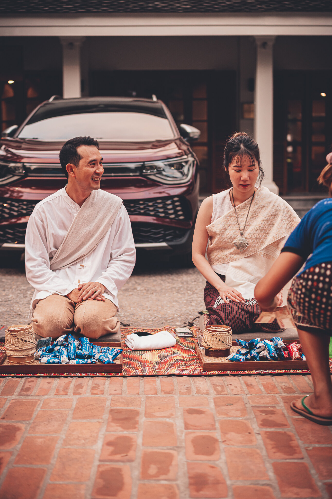
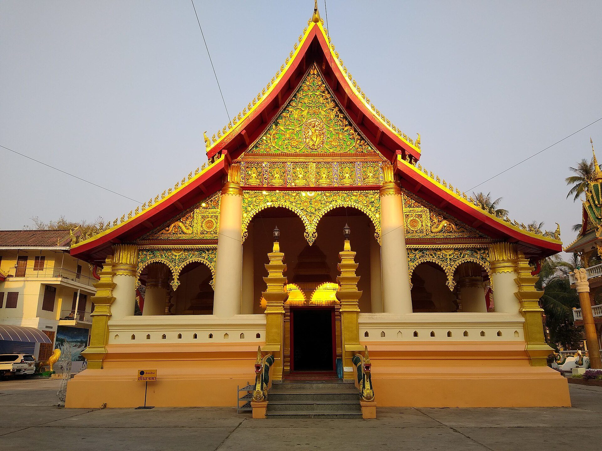
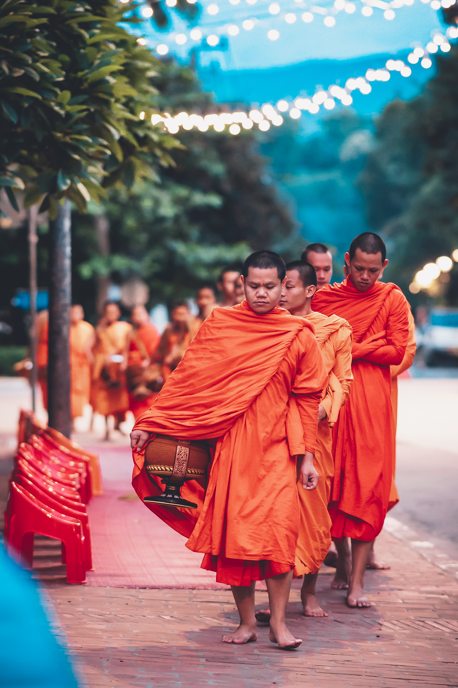
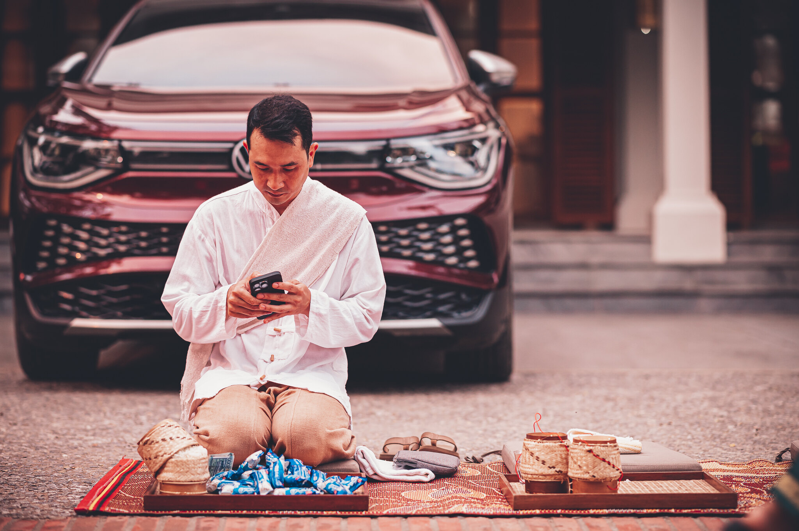
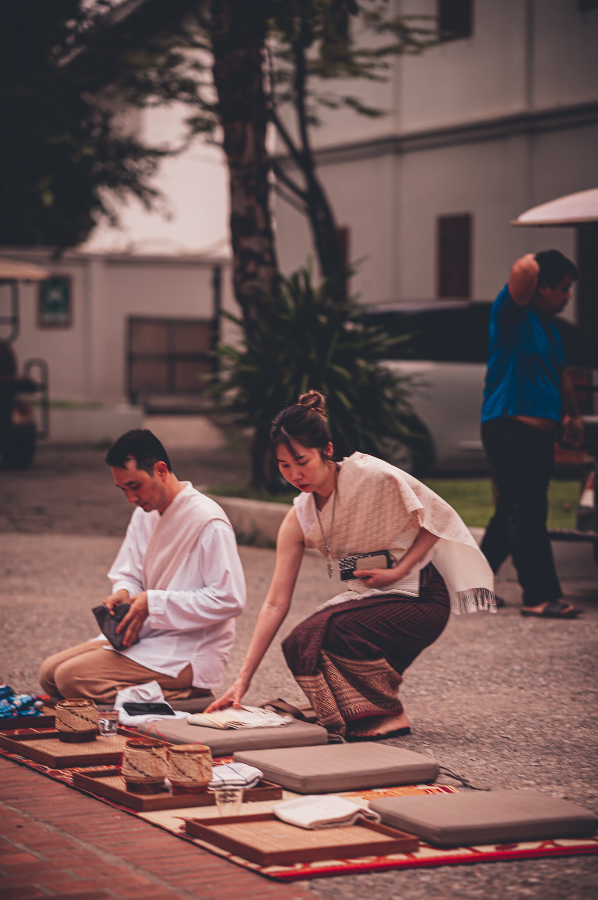
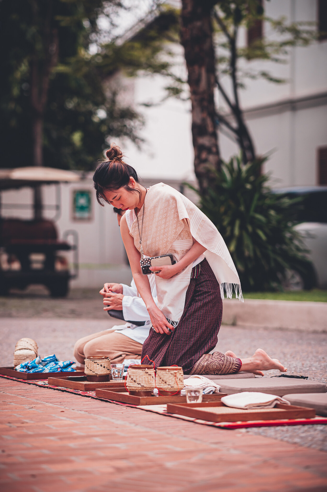
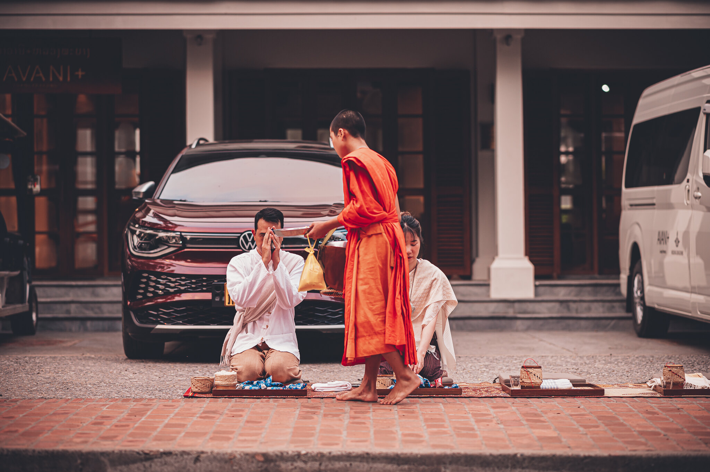
The morning alms-giving · Tak Bat
Sangkhathan · optional · USD 15 per person
Sangkhathan Temple Offering
A personal offering of useful everyday items for the monastic community, presented by you. It is not the morning alms-giving: Tak Bat is the food each guest offers during the ceremony, at their own cost, while the Sangkhathan is a separate, optional offering that you may choose to have prepared in your name.
We will prepare the offering for you; each guest who takes part presents their own.
Prepared offering
Everyday items for the monastic community: personal-care items and other daily necessities.
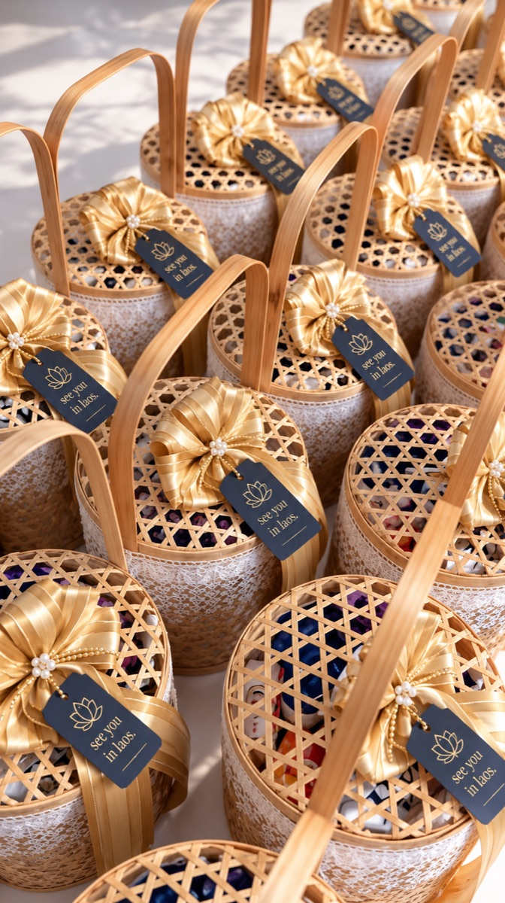
The Sangkhathan temple offering
My Trip
Who is attending which part of the day?
Each guest answers the wedding day for themselves — the Temple Ceremony, the Sangkhathan, Coffee & Cake, the Vow Ceremony and the Wedding Dinner — in step 03 · The Wedding of their invitation.
Open My TripOn the return · 12:00 – 15:30 · Souphattra Heritage
Coffee & Cake
Together after the temple, from 12:00 until the ceremony — coffee, cake and time to breathe before the vows.
Dress: Resort Wear
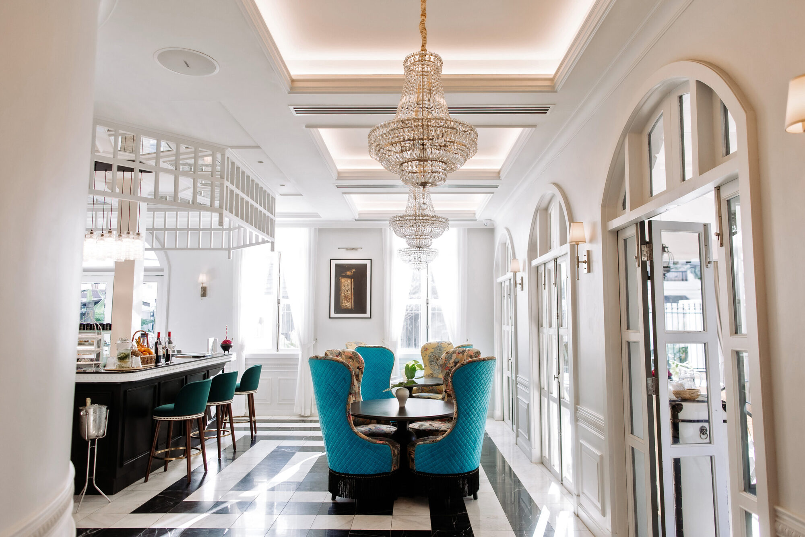
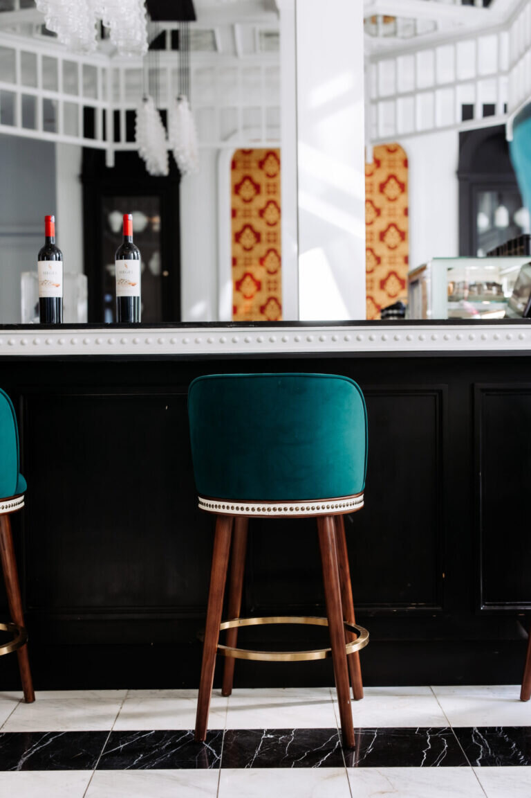
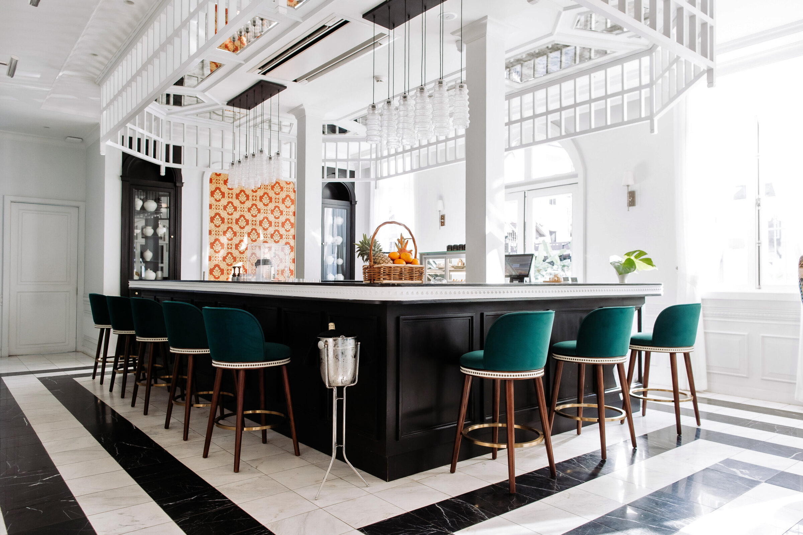
Coffee & Cake · Souphattra Heritage Vientiane
15:30 · Souphattra Heritage
Vow Ceremony
The vows, at the green door, in front of everyone who matters.
Dress: Black Tie
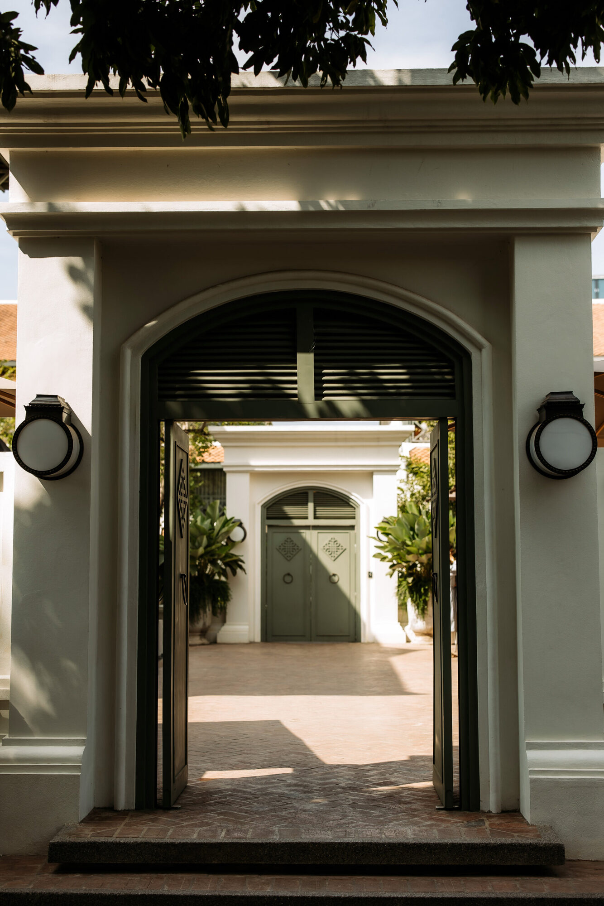
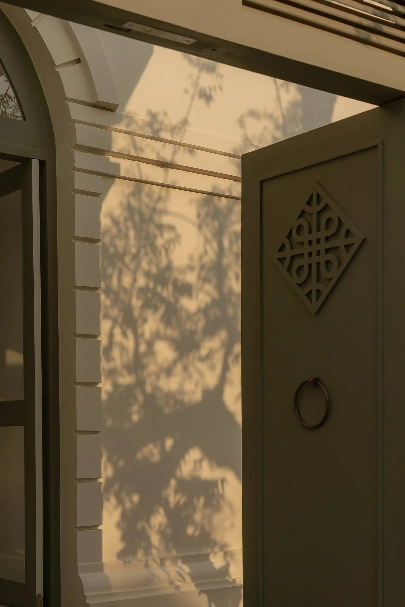
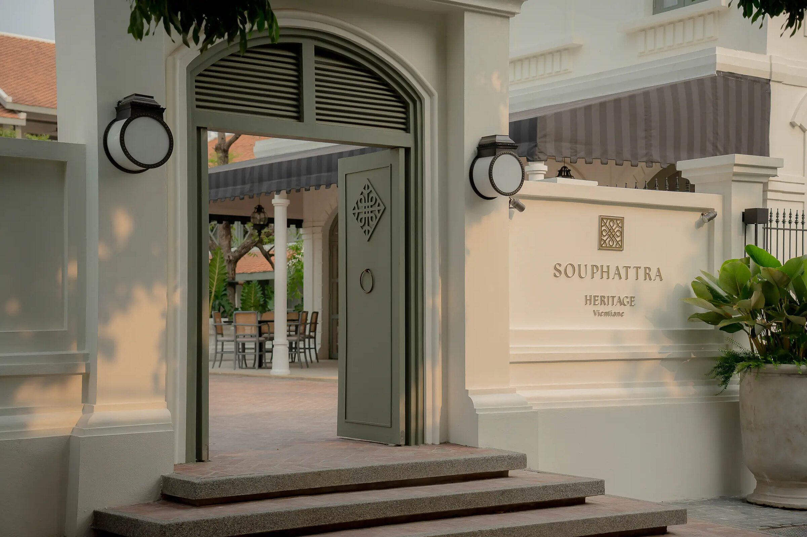
The Vow Ceremony · the green door
19:30 · Souphattra Heritage · poolside
Wedding Dinner
An evening poolside, bringing the wedding day to its final and longest chapter — a Chinese sharing menu at the table, and the night to follow.
Dress: Black Tie
The wedding dinner · Souphattra Heritage Vientiane · 28 February 2027
The stay
Souphattra Heritage Vientiane
Two nights, 27 February – 1 March 2027. The first night, in the room category you choose, is your cost; the second night is complimentary, hosted by Haruthai & Suthep. You can also stay at the Guest House complimentary — a shared one-bedroom house of four places in downtown Vientiane.
Choose your roomYour Invitation